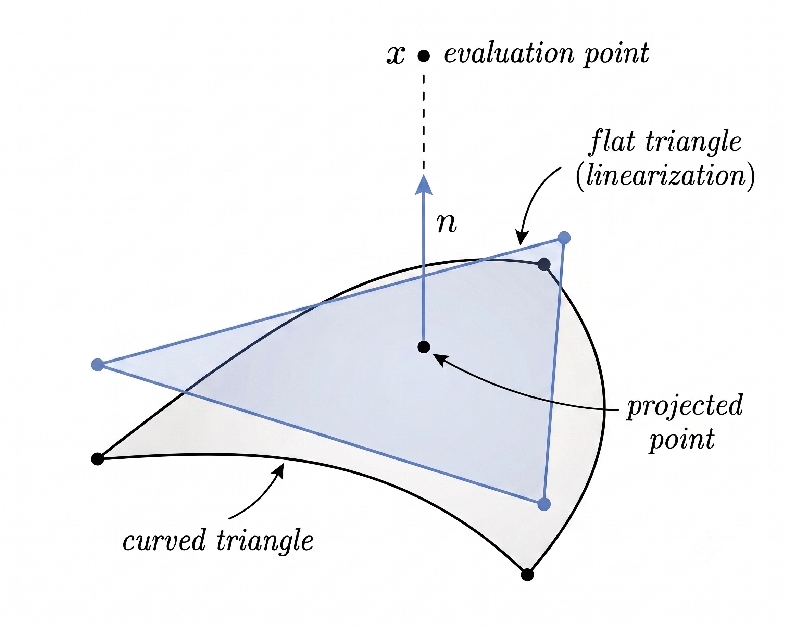

Near Field Potential Evaluation#
After computing the density on the surface, the potential
away from or close to the boundary needs to be evaluated.
Close to the surface, fixed order quadrature does not resolve the sharp kernel peak. FMM accelerates the resulting quadrature sum but cannot remove this quadrature error, so a local correction is required.
Local Geometry#
For a close curved triangle \(T=\phi(\widehat T)\), the map \(\phi\) takes the reference triangle \(\widehat T\) to the physical element \(T\). We project the target point onto the element and build a tangent triangle at the projected point:

Tangent Triangle Correction#
The singular correction is computed on \(\phi_{\mathrm{lin}}(\widehat T)\). Let \(J\) denote the surface Jacobian of \(\phi\). Pulling the element integral back to the reference triangle gives
For the Laplace and Helmholtz single layer kernels, the singular part is
We add and subtract this part on the tangent triangle:
For the Laplace kernel this cancels the leading \(1/r\) behavior and leaves a bounded remainder. For Helmholtz,
so the same subtraction removes the singular part and leaves a smooth Helmholtz remainder. The tangent triangle integral is evaluated by the exact formula [GD21]; the remainder uses standard Gauss quadrature.
FMM Near Field Correction#
Let \(\mathcal N(x)\) be the set of source triangles close to the target point \(x\). The FMM result already contains their ordinary quadrature contributions, which are corrected by
\(u_T^{\mathrm{quad}}\) is the contribution already represented by FMM, and \(u_T^{\mathrm{corr}}\) includes the tangent triangle correction. The current implementation marks a triangle as near when the target distance to its center is smaller than the element size.